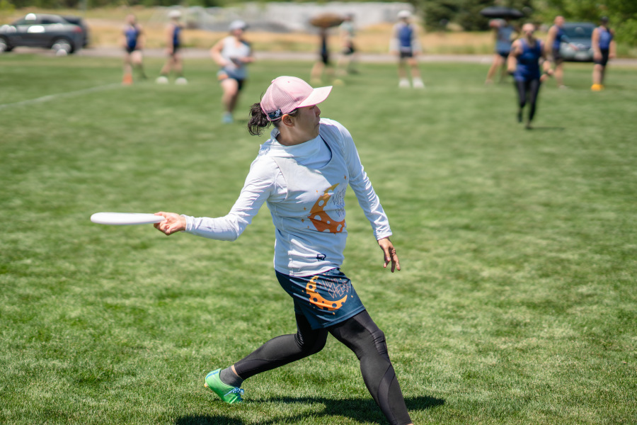
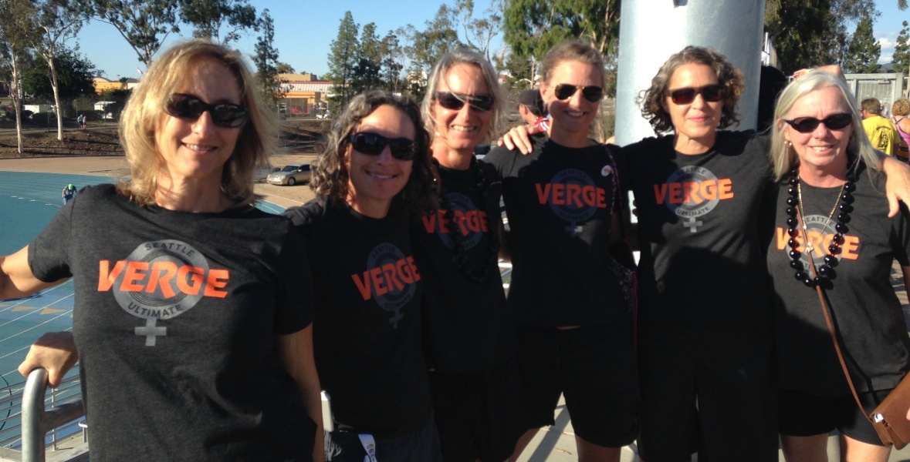
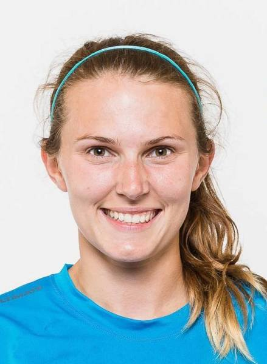

Players
Your story starts with a hat draw.
Rec or competitive, 7 or 47 — hat leagues take individual signups and we draw the teams. Adult league runs year-round; youth leagues fill every fall.
Find your league →The site reads like a well-edited community magazine: every program is a person's story, and Spirit of the Game is the editorial voice.
You said the current site works like league software and you want it to tell stories. This direction takes that at face value: we design discnw.org as a community magazine, where a parent's sentence carries the hero, features have bylines, and photography is documentary — printed clean, in full color, at sizes that show you trust it.
Registration stays one click away on every screen, but the reason to register is always a person. For coaches, alumni, and donors it reads as pride; for a parent, it's the truest answer to "what will this give my kid?"
The photographs carry the color; the interface stays out of their way. Around them: warm paper, a near-black ink, quiet greys — and a single saturated green that belongs to the fields this club plays on.
Pull-Sky Paper
#FAFAF7
Page background — the white of the disc and of the page.
Puget Ink
#10192B
Display type, the issue strip, the impact band, the footer. A near-black that keeps the current navy's warmth.
Spirit Green
#0E5F41
The one editorial accent: attribution rules, links, primary buttons, drop caps. Lifts to #8FD0AF on ink. Never on a photograph.
Sideline Grey
#5E635A
Captions, bylines, rules — the quiet voice of a wet sideline.
Grass Tint
#E9F0E9
Tinted panels and callout boxes — surfaces only, never imagery.
One dramatic contrast, held everywhere: Newsreader italic at up to 120px for the voices, Public Sans at 17px and below for everything else. Nothing in between competes.
The season turns on a Tuesday in the rain.
Newsreader — variable optical size, weights 300–800, true italics. Used for headlines, features, and pull quotes.
Hat leagues accept individual registrations — you sign up alone, and we draw teams from a hat. It's how most people meet this community: one summer, one roster of strangers, one season of Mondays.
Public Sans — weights 300–800. Used for body text, captions, bylines, navigation, and buttons.
“He came home with a second family.”
Fall leagues are open
Saturday at Spring Reign
What to bring to your first practice
DiscNW organizes leagues, tournaments, camps, and clinics across the greater Puget Sound region, serving over 10,000 players every year.
— Maya R., Fall Middle School League parent
“We drove home from Spring Reign and she talked the whole way. She never talks the whole way.”
A real community voice at massive serif scale, with a byline, replacing the slogan everywhere a slogan would normally go — starting with the homepage hero. It rests as ink on paper: the opening quote hung into the margin, nothing laid over it. The attribution never changes — a green rule, an em dash, a first name.
The top of the redesigned discnw.org. One parent's sentence at full scale on clean paper, then the photograph — full color, full width, nothing printed on it. Registration stays one click away.
Mockup · discnw.org at 1440px
From the sideline · Fall Middle School Leagues
“I signed him up for a frisbee league. He came home with a second family.”
Stories from the 10,000 players, coaches, and families who make DiscNW — and every league, camp, and tournament you can join this fall.

The storytelling core: players, coaches, and parents each get a headline in their own language, over documentary photography left exactly as it was shot.
Mockup · homepage, continued
Find your way in
Players
Rec or competitive, 7 or 47 — hat leagues take individual signups and we draw the teams. Adult league runs year-round; youth leagues fill every fall.
Find your league →
Coaches & volunteers
In a self-officiated sport, coaching is a relationship-centered role. The Coaching Collective backs you with training, season plans, and a community that shares what works.
Join the Coaching Collective →
Parents & families
Non-contact, self-officiated, built on Spirit of the Game. Sliding-scale fees mean every family pays what fits — and every kid gets the same season.
Read the parents' guide →Four live components: a community-submitted feature with bylines and full-color photographs, the site's one black-and-white photo essay, an impact band where every stat is anchored by a human line, and a contributors strip that puts real names and faces to the voices.
Component A — community feature: "My first…" series
The huck went up in the second half of Theo's fourth-ever game, at Spring Reign, on a field still wet from the morning. He'd spent three practices learning to cut — go when the disc goes up, not after. He went. The disc floated the way a white disc floats against a grey April sky, and for one long second the whole sideline held its breath with him.
He left his feet. He caught it. The spirit circle afterward ran ten minutes long, because both teams wanted to talk about it.
“My knees were green until Thursday. Completely worth it.”
— Theo N., 7th grade



Component B — photo essay: one Saturday, told in four frames
Photo essay · Spring Reign 2026
The biggest youth ultimate weekend in the Northwest, hung the way a gallery would hang it: black and white, printed wide, one caption per photograph. This essay is the only monochrome on the site, saved for one story a season.


Component C — impact stats with narrative framing
The season in numbers
And every single one of them had a first game, a first drop, and a first spirit circle.
And the only one where the kids referee themselves — that's the part parents don't forget.
Community Supported Ultimate: every family self-selects a tier, and everyone plays the same season.
Component D — contributors: the real people behind the pages

A community magazine runs on real people. These are a few of the board, staff, and coaches behind DiscNW — named and credited the way a magazine credits its contributors.



Registration stays fast — buttons say exactly what happens, and even an event card carries one community voice.
Buttons
Primary · rest, then hover — deepens to Green #0A4530 and lifts 1px.
Secondary · rest, then hover — fills with Puget Ink.
Quiet · rest, then hover — the underline arrives.
Event card · real program
“I signed up alone. By week two I had a carpool.”
— Jess T., Wonder League
Community Supported Ultimate: choose the tier that fits your household, A–H.
Register for Wonder LeagueHero headline
Nobody referees this sport. That's the point.
Leads with the sport's strangest fact and lets it stand as the proudest one.
Registration confirmation
You're on the roster. Week one is Monday, June 1 — your team and field location land in your inbox this week. Bring cleats, water, a light shirt and a dark shirt. Rainouts: (206) 781-5840.
A confirmation that reads like a teammate texting you, down to the real weather hotline.
To a nervous first-time parent
Nobody's kid shows up knowing how to throw a forehand. Coaches teach that in week one. Here's what to bring, what it costs — you choose the tier — and why both teams stand in one circle when it's over.
Removes the barrier first, then answers "why this sport" with its best ritual.